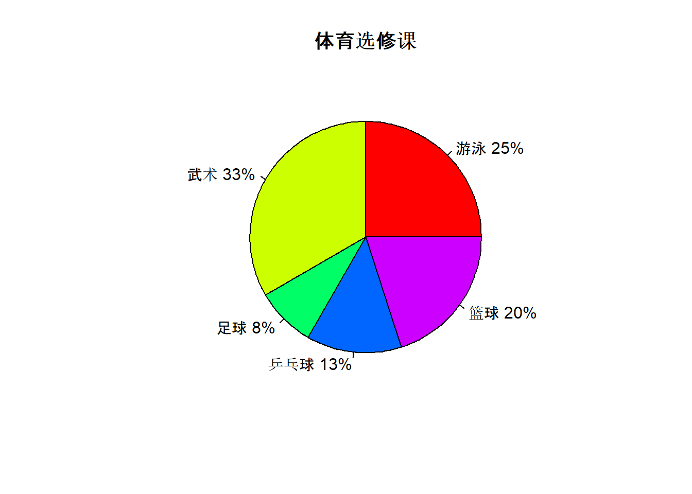
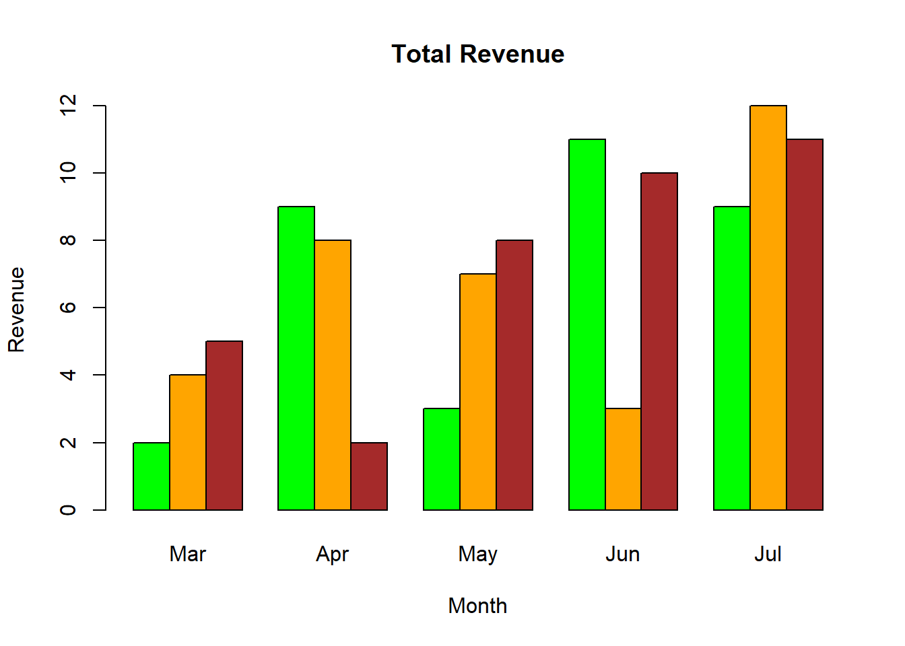
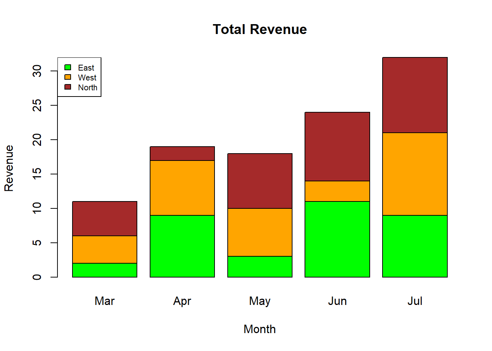
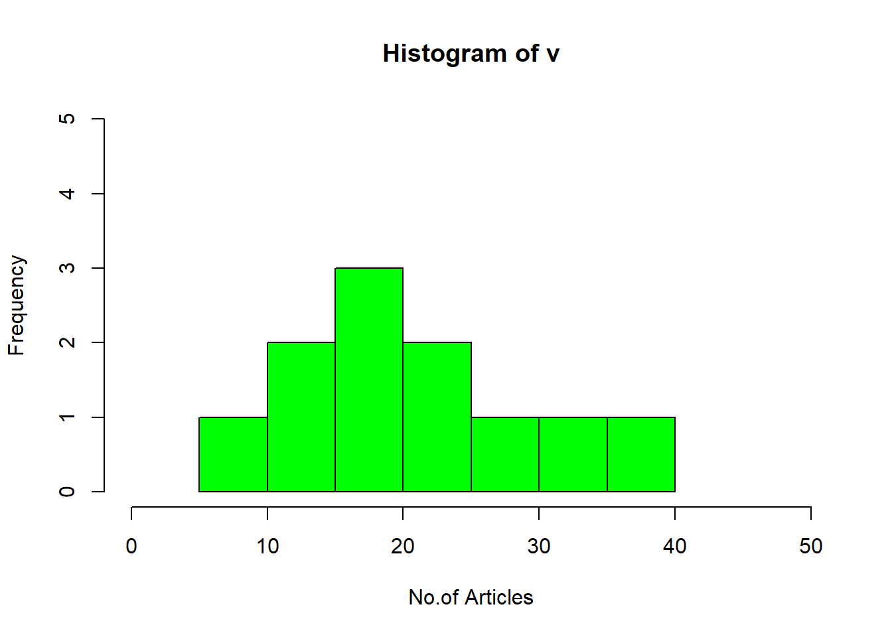
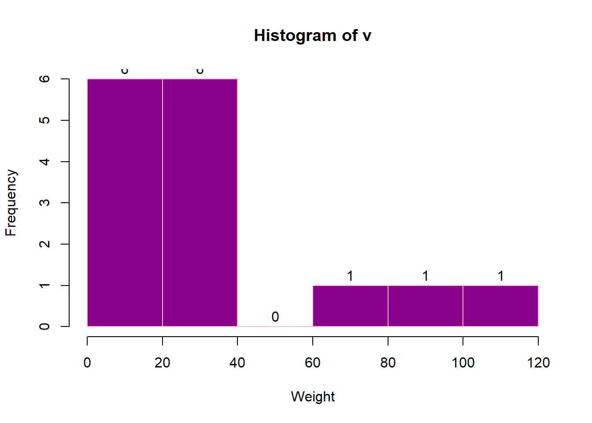
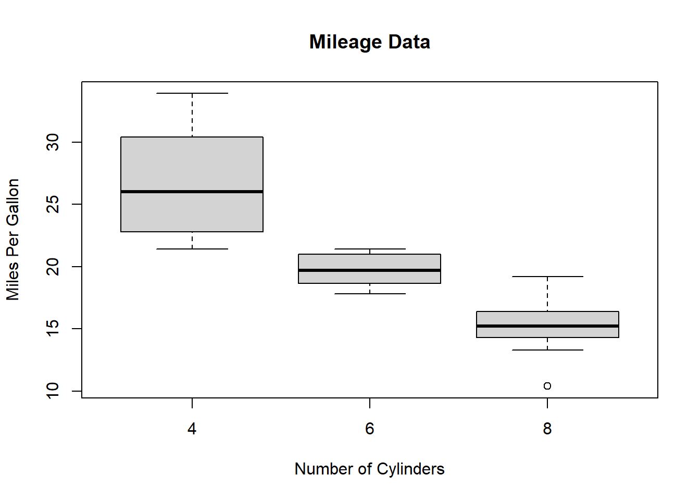
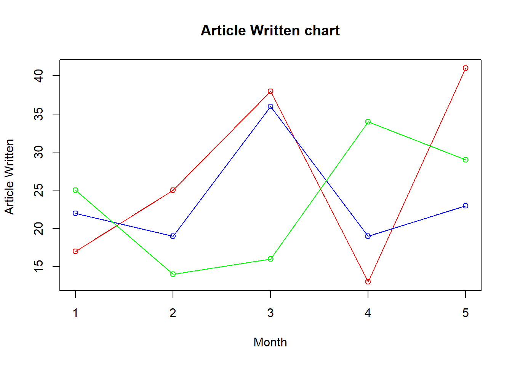

Chapter 3 数据可视化
3.1 饼状图
饼状图是一个将圆形划分为几个扇形的统计图表，用于描述数量之间的比例关系。在饼图中，每个扇区的弧长大小为其所表示的数量比例。饼形图很少用于科技文献，但是商业领域和大众媒体中的宠儿。
## [1] "LC_COLLATE=Chinese_China.936;LC_CTYPE=Chinese_China.936;LC_MONETARY=Chinese_China.936;LC_NUMERIC=C;LC_TIME=Chinese_China.936"假如大学里一个班一共60位同学，他们在选修体育课， 15人选择了游泳，20人选择了武术，5个人选修了足球，8个人选修了乒乓球，12个人选修了篮球。我们怎么用饼状图来表示这组数据呢？
# 数据放在一个向量中。
pe_slices <- c(15, 20, 5, 8, 12)
#体育课的名称也放入一个向量中
lbls <- c("游泳", "武术", "足球", "乒乓球", "篮球")
#计算选修每个体育课的人数占班级总人数的百分比
pct <- round(pe_slices/sum(pe_slices)*100)
#把体育课的名称和选修该课的人数占比合成一个字符串
lbls <- paste(lbls, pct)
#再给体育课名称和选修该课的人数占比字符串后边加一个百分号
lbls <- paste(lbls,"%",sep="")
#使用函数pie画出饼状图
pie(pe_slices,labels = lbls, col=rainbow(length(lbls)),
main="体育选修课")
3.2 条形图（bar chart）
colors = c("green", "orange", "brown")
months <- c("Mar", "Apr", "May", "Jun", "Jul")
regions <- c("East", "West", "North")
# Create the matrix of the values.
Values <- matrix(c(2, 9, 3, 11, 9, 4, 8, 7, 3, 12, 5, 2, 8, 10, 11),nrow = 3, ncol = 5, byrow = TRUE)
# Create the bar chart
barplot(Values, main = "Total Revenue", names.arg = months, xlab = "Month", ylab = "Revenue",col = colors, beside = TRUE)
barplot(Values, main = "Total Revenue", names.arg = months, xlab = "Month", ylab = "Revenue", col = colors)
# Add the legend to the chart
legend("topleft", regions, cex = 0.7, fill = colors)
3.3 柱状图（histogram）
# Create data for the graph.
v <- c(19, 23, 11, 5, 16, 21, 32, 14, 19, 27, 39)
# Create the histogram.
hist(v, xlab = "No.of Articles", col = "green",
border = "black", xlim = c(0, 50),
ylim = c(0, 5), breaks = 5)
# Creating data for the graph.
v <- c(19, 23, 11, 5, 16, 21, 32, 14, 19,
27, 39, 120, 40, 70, 90)
# Creating the histogram.
m<-hist(v, xlab = "Weight", ylab ="Frequency",
col = "darkmagenta", border = "pink",
breaks = 5)
# Setting labels
text(m$mids, m$counts, labels = m$counts,
adj = c(0.5, -0.5))
3.4 箱形图
## mpg cyl
## Mazda RX4 21.0 6
## Mazda RX4 Wag 21.0 6
## Datsun 710 22.8 4
## Hornet 4 Drive 21.4 6
## Hornet Sportabout 18.7 8
## Valiant 18.1 6# Plot the chart.
boxplot(mpg ~ cyl, data = mtcars,
xlab = "Number of Cylinders",
ylab = "Miles Per Gallon",
main = "Mileage Data")
3.5 线形图
# Create the data for the chart.
v <- c(17, 25, 38, 13, 41)
t <- c(22, 19, 36, 19, 23)
m <- c(25, 14, 16, 34, 29)
# Plot the bar chart.
plot(v, type = "o", col = "red",
xlab = "Month", ylab = "Article Written ",
main = "Article Written chart")
lines(t, type = "o", col = "blue")
lines(m, type = "o", col = "green")